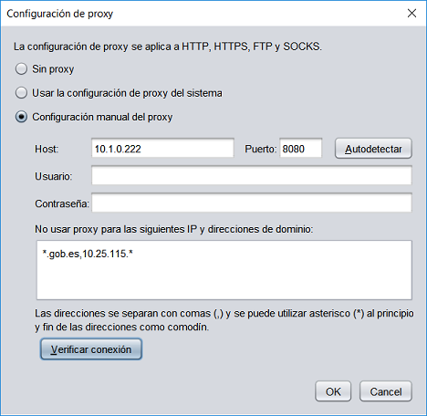

Configuración de proxy
Autofirma debe acceder a Internet por distintos motivos y, de ser necesario, se deberá
configurar un proxy de red para permitírselo. Los propósitos para los que
Autofirma puede requerir el acceso a la red son:
- Comunicarse con las páginas web en las que se realizan trámites de firma.
- Buscar actualizaciones (Sólo si se encuentra habilitada la opción).
- Enviar estadísticas (Sólo si se encuentra habilitada la opción).
Todas las conexiónes de red realizadas por Autofirma aplicarán la configuración
de proxy aquí establecida.

Las opciones de configuración de proxy son:
- Sin proxy: Las conexiones de red se harán de forma directa.
- Configuración de proxy del sistema: La aplicación identificará la
configuración que debe aplicar para cada URL según la configuración
establecida en el sistema operativo y/o navegador. Esta configuración puede no ser
exactamente igual a la establecida en Windows.
- Configuración manual de proxy: Permite establecer la configuración
específica de proxy a utilizar. Las opciones configurables son:
- Host: Nombre de dominio o IP del proxy.
- Puerto: Número de puerto de acceso al proxy.
- Usuario: Nombre de usuario a utilizar cuando el proxy requiera autenticación. Opcional.
- Contraseña: Contraseña de usuario a utilizar cuando el proxy requiera autenticación. Opcional.
- No usar proxy para las siguientes direcciones IP y direcciones de dominio: Listado de direcciones IP
y nombres de dominio a los que se debe acceder de forma directa (sin pasar por el proxy configurado manualmente).
Comúnmente, se configurarán aquí las direcciones de la intranet en la que se trabaje cuando se realicen
operaciones de firma desde aplicaciones web situadas tanto dentro como fuera de su intranet.
Las direcciones se escribirán separadas por comas (,) y se pueden escribir asteriscos (*) al principio o final
de cada una a modo de comodín para identificar subdominios o subredes completas. Opcional.
Adicionalmente, se proporcionan los siguientes opciones:
- Autodetectar: Extrae de la configuración del sistema el host y el puerto a utilizar para una
dirección genérica.
- Verificar conexión: Comprueba la configuración manual de proxy para el acceso a una
dirección genérica.
La configuración establecida se aplicará al pulsar sobre el botón OK. Si se pulsa el botón
Cancelar, se cerrará la ventana sin aplicar la configuración.